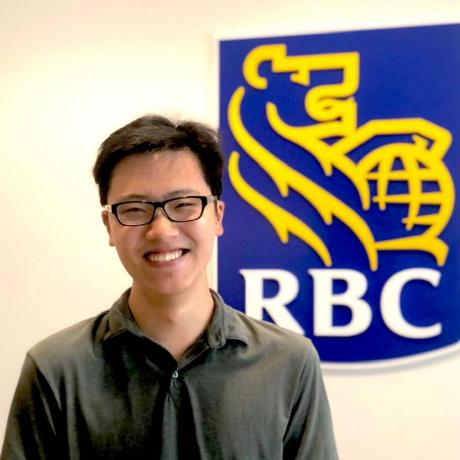

Kevin Junyang Cui
Portfolio
Resumé
Experience
RBC Royal Bank of Canada
July 2019 - August 2019Innovation Developer summer intern at RBC. Front-end and back-end software development
Toronto Youth Network
June 2019 -Web Development
Triway Education
February 2019 - August 2019Providing guidance for developing vital mathematical skills. Teaching important concepts in the mathematics curriculum
The Knowledge Society (TKS)
October 2018 - June 2019Attended an organization for youth entrepreneurship and technological innovation. Developed simple applications for neurotechnological software and hardware.
DMOJ: Modern Online Judge
May 2019 - June 2019Problem setted for the Triway Cup 2019 Junior Computing Contest on DMOJ: Modern Online Judge
Education
Westmount Collegiate Institute
September 2016 - June 2020Computer Science Club, Science Club, Model UN, Grade 11 Academic Functions Award (2018-19), Grade 11 Academic Physics Award (2018-19)


Software Development Student
Hello, World!
I am Kevin, a software developer. I am especially knowledgeable in Java and Python, and my work primarily consists of application and data-intensive back-end development, although I am aiming towards being stronger with full-stack development as well.
Beyond Java and Python, I also have experience working with other languages (JavaScript, HTML, CSS, TypeScript, Arduino, C/C++, SQL), web application frameworks (Angular, Spring Boot), APIs (Jive, Discord, Emotiv), libraries (Matplotlib, Pygame), game engines (Unity), Git, JSON, and LaTeX.
I am currently working as an Innovation Developer at RBC Royal Bank. I am enrolled in secondary school.